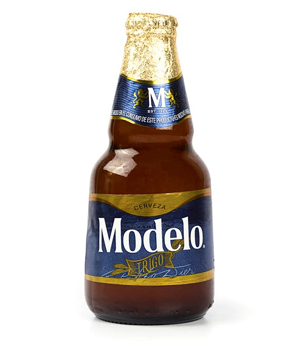

Cerveza Modelo Trigo

Es una receta de Bélgica estilo Witbier, perfeccionada por la maestría en procesos e ingredientes de la marca Modelo. Su color dorado y turbio y su espuma abundante provienen del no filtraje de la cerveza, básico en el proceso elaboración de cervezas de trigo.